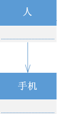

UML类图
请看下面这个类图：
- 1 人与钢琴之间是依赖关系，即 人
use钢琴 - 2 人与手机之间是关联关系，即 人
has手机 - 3 人与团队之间是聚合关系，即 人
聚合成团队，即便脱离团队，人可以单独存在。 - 4 琴弦、琴箱等和吉他之间是组合关系，即 琴弦、琴箱等
组合成吉他，若独立出来，不可单独存在。 - 5 电吉他与吉他是继承关系中的泛化关系，即 电吉他
is吉他，类继承抽象类，类继承父类都属于这种关系 - 6 吉他、钢琴和乐器之间是继承关系中的实现关系，表示类是接口所有特征和行为的实现
依赖关系(dependency)
单向或双向（通常我们需要避免使用双向依赖关系），表示一个类依赖于另一个类的定义，其中一个类的变化将影响另外一个类，是一种“use a”关系，如果A依赖于B，则B表现为A的局部变量，方法参数，静态方法调用等。
1 | public class Person(){ |
1 | public class Person(){ |
1 | public class Person(){ |
关联关系(Association)
单向或双向（通常我们需要避免使用双向关联关系），是一种”has a“关系，如果A单向关联B，则可以说A has a B，通常表现为全局变量。如：老师与学生，丈夫与妻子关联可以是双向的，也可以是单向的。学生和老师之间的双向关系，体现在多对多关系，即一个老师有多名学生，一个学生有多个老师。学生与课程的单项关系体现在一对多，即一个学生有多名课程，课程为抽象并不拥有东西。

1 | public class Person(){ |
聚合关系(Aggregation)
单向，关联关系的一种，是整体与部分的关系，且部分可以离开整体而单独存在。与关联关系之间的区别是语义上的，关联的两个对象通常是平等的，聚合则一般不平等，有一种整体和局部的感觉，实现上区别不大。
1 | public class Family{ |
组合关系(Composition)
组合关系是关联关系的一种，是比聚合关系还要强的关系。是整体与部分的关系，但部分不能离开整体而单独存在。
1 | public class Guitar{ |
继承关系(Inheritance)
泛化关系(Generalization)
是一种继承关系，表示一般与特殊的关系,即”is a“关系，类继承抽象类，类继承父类都属于这种关系，它指定了子类如何特化父类的所有特征和行为。
例如：老虎是动物的一种，即有老虎的特性也有动物的共性。
实现关系(Realization)
是一种类与接口的关系，表示类是接口所有特征和行为的实现。
时序图
参考链接
- 看懂UML类图和时序图
- UML类图(Class Diagram)中类与类之间的关系及表示方式
- 详解UML图之类图
- 软件工程课上老师所讲的。